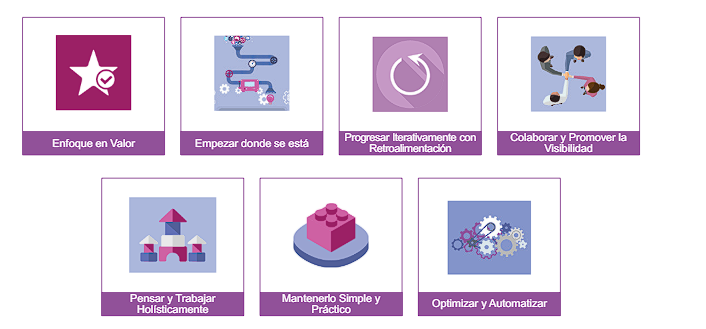
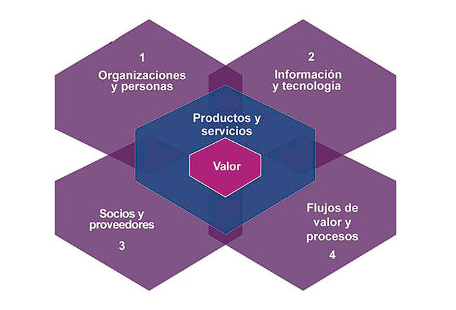
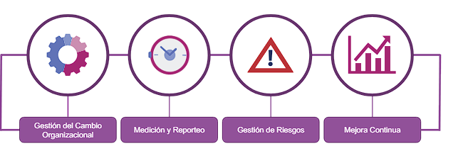
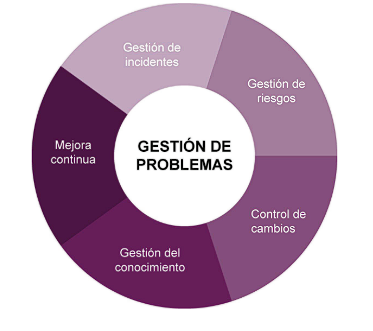
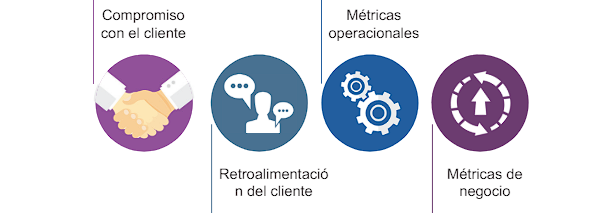

En un mundo donde los fabricantes se convierten en proveedores de servicios, la transformación digital revoluciona todas las industrias. Las empresas están reestructurando para mantenerse competitivas, adoptando tecnologías como la computación en la nube, machine learning y blockchain. La gestión de servicios de TI es crucial en este escenario, con ITIL 4 como un marco flexible que se adapta a diversas metodologías como Lean, Agile y DevOps. ITIL 4 ofrece un enfoque práctico para la entrega de servicios habilitados por TI, permitiendo a las organizaciones adaptarse a la transformación digital y mantener su relevancia en el mercado.
Para abordar los desafíos del mundo real de la gestión de servicios y
adoptar un marco de gestión de servicios, como ITIL, es importante
comprender los conceptos clave de la gestión de servicios. Estos
conceptos clave incluyen:
Organizaciones, proveedores de servicios, consumidores de servicios
y otras partes interesadas.
La gestión de servicios se define como un conjunto de competencias organizacionales especializadas para entregar el valor a los clientes en forma de servicios
El desarrollo de las capacidades organizacionales especializadas
mencionadas en la definición de gestión de servicios requiere un
entendimiento de:
El componente central de la gestión de servicios es el servicio. El proveedor de servicios entrega valor a través del servicio. Los servicios que proporciona una organización se basan en productos. Los productos son la configuración de los recursos de una organización diseñados para ofrecer valor a un consumidor
Consiste en "actividades conjuntas realizadas por un proveedor de servicios y un consumidor de servicios para garantizar la creación conjunta de valor en función de las ofertas de servicios acordadas y disponibles"
Los principios guía respaldan las diferentes acciones y decisiones tomadas por una organización, incluidas sus iniciativas de mejora continua. Se trata de adoptar un enfoque de gestión de servicios y adaptar la orientación de ITIL a lo que se necesita. Estos principios también se reflejan en otros marcos, métodos, estándares, filosofías e ideas. De esta manera, una organización puede seleccionar su enfoque único de gestión de servicios
Este sistema describe las formas en que los diversos segmentos y actividades de una organización están vinculados entre sí. Las cuatro dimensiones definidas por ITIL se relacionan e impactan a todos los elementos de la SVS. Por lo tanto, antes de comentar la SVS, debe conocer las cuatro dimensiones.
La gestión del servicio se beneficia del desarrollo tecnológico en todos los niveles. La gestión del servicio está respaldada por tecnologías relacionadas con los sistemas de gestión del flujo de trabajo, bases de conocimiento, sistemas de inventario, sistemas de comunicación y herramientas analíticas.
la gestión eficaz de la información es la principal forma de entregar valor a los clientes. Es el resultado clave de casi todos los servicios de TI consumidos por los clientes de negocio. Consideremos el ejemplo de uno de los servicios de Recursos Humanos (RH) para comprender cómo crean valor para sus clientes al administrar la información.
| El propósito del SVS es garantizar que la organización co-crea valor constantemente con todas las partes interesadas a través del uso y la gestión de productos y servicios. |
| Para funcionar correctamente, la gestión de servicios debe funcionar como un sistema. El SVS de ITIL describe las aportaciones a este sistema, así como los elementos de este sistema y los resultados (logro de los objetivos de la organización y el valor para la organización). |
|  |
| las prácticas de gestión general se han
adaptado para la gestión de servicios desde dominios generales
de gestión de negocios. |
| En ITIL, una práctica de gestión es un conjunto de recursos organizacionales diseñados para realizar un trabajo o lograr un objetivo. ITIL 4 incluye 14 prácticas de gestión general, 17 prácticas de gestión de servicios y tres prácticas de gestión técnica. |
|  |
| La gestión de solicitudes de servicio depende de procesos y procedimientos bien diseñados, que se operan a través de herramientas de seguimiento y automatización para maximizar la eficiencia de la práctica |
| El propósito de la práctica gestión de nivel de servicio es establecer objetivos claros basados en el negocio para el desempeño del servicio, de modo que la entrega de un servicio pueda evaluarse, monitorearse y administrarse adecuadamente en función de estos objetivos |
|  |